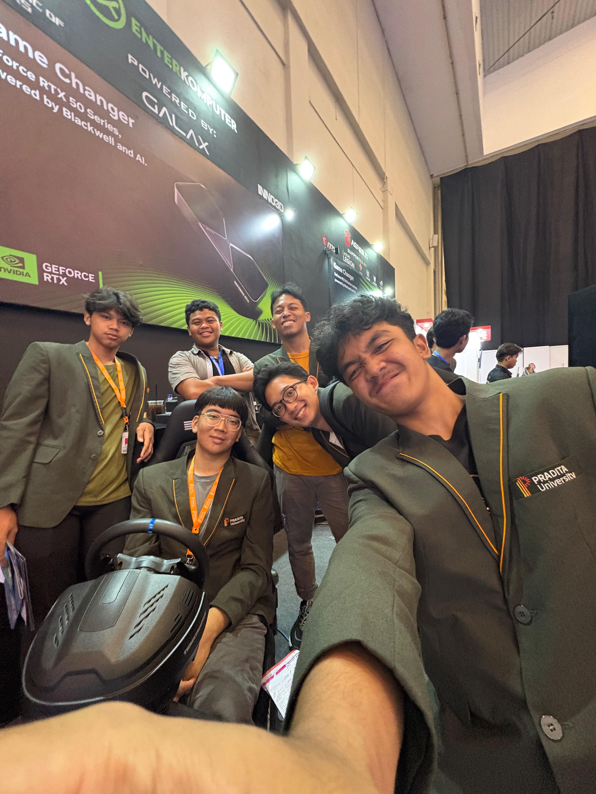

Entering an
Unfamiliar World
2025
Starting university in Information Technology was both exciting and overwhelming. I entered my first semester with almost no background or technical knowledge in IT. Programming, databases, and development concepts felt completely unfamiliar, while many people around me already seemed to understand the basics. At first, it was difficult to keep up, and there were many moments where I felt frustrated and left behind. Even so, giving up was never an option for me. I spent extra time relearning materials outside the classroom and trying to understand concepts step by step. The first semester taught me that growth in technology is not about instantly being good at everything, but about having the patience and consistency to keep learning even when the process feels difficult.
